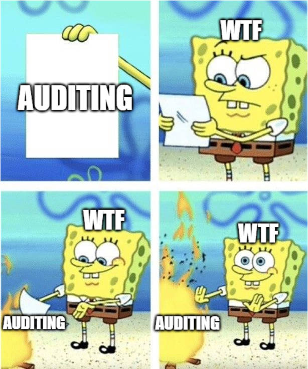
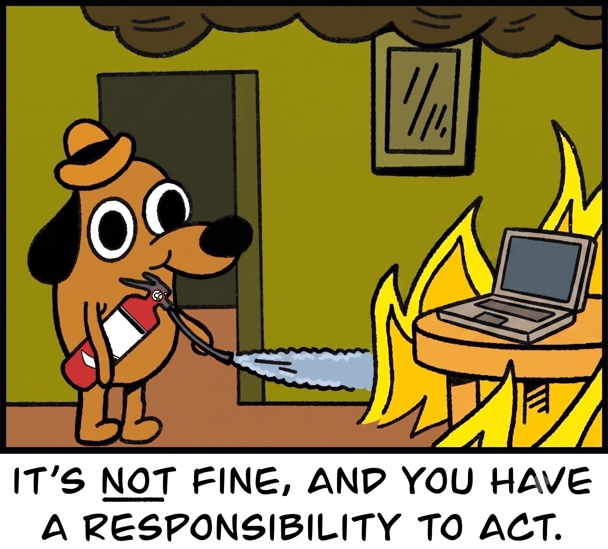
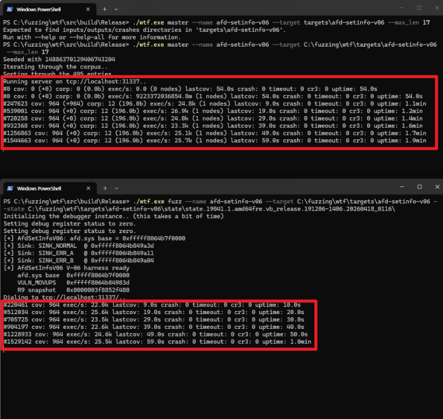

[Research] Running at Full Capacity Even After Work! How to Become a Fuzzing Plant Manager Who Sleeps Like a Baby Part 1 (EN)

0. Introduction
Hello! This is Libera, who wrote Part 3 of the recent “Windows LPE Bug Hunting Experience” series by the younger members. How is everyone doing?
I believe there are two main approaches to finding vulnerabilities. One is “auditing,” where you read the code directly to identify vulnerable sections, and the other is “fuzzing,” where you feed a fuzzer countless inputs to trigger abnormal behavior. In the previous series, I delved into kernel drivers through auditing. I launched IDA and began my analysis starting with the dispatch routine.
Now that I’ve experienced auditing, the goal of this research is to properly study the other approach: fuzzing. The idea that vulnerabilities can be found even while I’m sleeping is incredibly appealing, isn’t it? So, in this series, I’ll document the process of setting up a system to fuzz afd.sys—the Windows socket kernel driver—using a fuzzer called WTF (What the Fuzz).
In today’s Part 1, we’ll understand what WTF is and explore what’s needed to run the fuzzer. We’ll dive into afd.sys in earnest starting with the next part, so let’s focus on learning about WTF in this one!
1. Why “Snapshot” Fuzzing?
When you hear the term “fuzzer,” you probably think of AFL or libFuzzer. These tools work as follows:
- Run the target program
- Feed it a single input (test case)
- Check if it crashes
- Exit the program, slightly modify the input, and repeat from step 1
This method involves restarting the program each time. If the program is one that simply reads and parses a file from the console, this approach is sufficient. However, the target we’re focusing on this time—afd.sys—isn’t that simple.
To reach the desired code (function) in afd.sys, you must first go through a series of preparatory steps, such as creating a socket (socket), binding it to an address (bind), and establishing a connection (connect). What if this process has to be repeated from scratch for every test case? The fuzzer would waste time re-establishing the socket connection each time, time that should be spent actually finding bugs. Furthermore, since this is kernel code, there are limitations on restarting the program after it has terminated.
This is where snapshot fuzzing comes into play.
What is snapshot fuzzing?
It involves taking a complete “snapshot”—like a photograph—of the target’s state (the entire memory and all CPU registers) at the exact moment it reaches the desired state. From that point on, instead of running the program from the beginning, the stored snapshot is loaded, input is injected starting from that point, the program is executed briefly, and then it is rolled back to the snapshot state.
To use an analogy, it’s similar to a “save point” in a video game. If you save right before a boss fight, even if you die to the boss, you don’t have to restart from the beginning of the stage—you can resume right where you left off, just before the boss. Snapshot fuzzing works by “saving” the input data right before it’s used, and then infinitely retrying from that point while varying only the input.
The advantages of this method are as follows:
- State control: You can start fuzzing after connections, authentication, initialization, and other processes have completed.
- Deterministic execution: Execution is possible without external factors like disk or network, making it easy to reproduce crashes.
- Fast recovery: Since you only need to roll back the changed pages rather than the entire memory each time, recovery is fast.
- Kernel fuzzing: You can fuzz the target using the same method regardless of whether it is in user mode or kernel mode.
The last two advantages are particularly important. Since afd.sys is a kernel driver, fuzzing must be performed while the socket is connected. Snapshot fuzzing is especially useful for components like afd.sys, where the operational state can vary widely during actual execution.
2. Why Was It WTF? feat. KAFL
Actually, when it comes to kernel fuzzing, the most well-known tool isn’t WTF—it’s KAFL. Still, there was a practical reason why I chose WTF.
KAFL is a hardware-based coverage fuzzer designed for OS kernels. The key is that it uses a CPU feature called Intel PT (Intel Processor Trace).
What is Intel PT?
It’s a feature where the hardware directly records the branch flow executed by the CPU. Since it tells you where the CPU branched to without having to track it manually with software, you can collect coverage at nearly native speed.
The problem is that this approach is dependent on specific hardware and environments. KAFL requires a CPU that supports Intel PT, and it runs on a custom-developed kernel (KVM) to utilize Intel PT within a virtual machine.

I didn’t want to know either—that KAFL’s custom kernel doesn’t yet support the Ultra series, the latest architecture for Intel CPUs…
I built a computer specifically for fuzzing, but it seems KAFL doesn’t support the Ultra Core yet. After purchasing the computer and struggling to set up KAFL, I started seeing reports on GitHub and elsewhere from people using Ultra Core CPUs who were experiencing build failures. I tried several times myself, but after switching to the Nyx kernel and running it, Intel PT recognition and KVM functionality were unclear, and I got stuck right at the template build stage for launching a QEMU-Nyx-based Windows VM. 😭
So I turned my attention to WTF. Here’s why WTF was a better fit for my situation:
- It doesn’t rely on specific hardware.
- WTF’s bochscpu backend emulates the CPU in software, so it measures coverage even without hardware features like Intel PT.
- It lets you start small by focusing on the target.
- While KAFL is a heavy-duty infrastructure that sets up an entire VM, WTF lets you take a snapshot of just the part you want to focus on and intensively fuzz a specific path; you can also choose the backend (precise bochscpu or fast KVM) depending on the situation.
Of course, KAFL is a powerful tool in terms of speed, provided the environment is right. However, what mattered most to me was whether I could run it right away in my current environment, and the answer was WTF. Now, let’s take a closer look at what exactly WTF is.
3. WTF, what the fuzz
WTF is an open-source snapshot fuzzer created by Axel 0vercl0k Souchet, and it excels particularly at fuzzing Windows targets. The key point is that as long as you can capture a snapshot—whether in user mode or kernel mode—you can fuzz it.
One of the reasons WTF gained popularity was the RDPEGFX fuzzing case by the Thalium team. They used WTF to fuzz the graphics channel of the Microsoft RDP client and discovered an actual CVE (CVE-2022-30221). I learned a lot from this case study, and I plan to reference those lessons throughout this series. (Thank you, RDPEGFX team 🙏)
So, let’s start by looking at how WTF works internally.
3.1 The WTF 4-Step Loop
Fuzzing with WTF essentially involves an infinite loop of the following four steps.
- Snapshot
Pause the target in the debugger to set it to the desired state, then save a dump of the entire physical memory and CPU state (registers) at that moment. This is a preparatory step performed exactly once before starting the fuzzing.
Of course, if you want to fuzz multiple target functions in parallel, you’ll need multiple snapshots. - Harness
You write code to specify where and how to inject test cases into the target, as well as when to halt execution. The harness’s role is to write the bytes generated by the fuzzer into a location the target can understand (the input buffer). - Execution
The target code is executed with the snapshot loaded and the input injected. During execution, coverage is tracked, crashes are detected, and changes to memory are recorded as “dirty memory.”
What is coverage?
It is a metric that determines whether “this input triggered a new code path.” Inputs that cause the same code to loop repeatedly are meaningless; the inputs we should target are those that lead to branches that have never been visited before. The fuzzer stores inputs that generate new coverage separately, then modifies them further to delve deeper and deeper into the code.
- Restore
It reverts only the physical memory that was modified during execution back to its original snapshot state and resets the CPU registers. Then, it creates a new test case and proceeds to step 2. Since only the modified pages are restored—not the entire memory—this restoration process is extremely fast.
3.2 Three Types of Execution Backends
In execution step 3 above, WTF can choose one of three backends to actually run the target code. Each offers different levels of speed and precision.
- bochscpu: This uses software CPU emulation. While it is the slowest, it collects the RIP of every instruction, making it useful for debugging and enabling precise tracing.
- WHV: A Windows hypervisor-based approach with moderate speed. Coverage is collected using Basic Block entry points.
- KVM: A Linux hypervisor-based approach with the fastest speed. Coverage is collected in the same way as WHV.
bochscpu is an emulator that mimics the CPU itself using software. It intercepts and inspects every single instruction. WTF calls a hook called before_execution for every instruction to retrieve the current RIP (execution location) and add it to a set. If an address is encountered for the first time, it is recorded as new coverage. While this method of examining every instruction provides high precision, it is correspondingly slow. Therefore, it is used more for harness debugging or crash trace analysis than for large-scale fuzzing. (The reason WTF ran on my Ultra 7 without any issues, unlike KAFL, is precisely because bochscpu collects coverage using only software, without any hardware features.)
WHV and KVM are forms of hardware virtualization. Since they run the target on a real CPU, they’re fast, but they don’t allow for instruction-level inspection. Therefore, they collect coverage in a different way: by setting a breakpoint at the start of each basic block.
What is a basic block (BB)?
It is a sequence of instructions that executes continuously without any jumps or branches; the block ends when it encounters a conditional branch.The flow can be seen in the following assembly code example.
addbb_A: mov eax, [rcx+4] ; ─┐ cmp eax, 8 ; │ That concludes BB 1 (A) jb too_small ; ─┘ Conditional Branch → End of Block addbb_B: mov edx, [rcx+8] ; ─┐ If jb doesn't work, click here (B) test edx, 1 ; │ jz default_case ; ─┘ too_small: xor eax, eax ; ← Jumped in from another page → New BB ret
To use the hardware backend, you need a list of the starting addresses of all basic blocks in the target beforehand, which can be generated using the IDA script (gen_coveragefile_ida.py). Then, when WTF initializes, it sets int3 (breakpoints) at those addresses. If it hits an int3 during fuzzing, it determines that it has reached that block for the first time, increases the coverage, and then removes that breakpoint. After all, there’s no need to revisit a location that’s already been visited.
Here’s the practical strategy: When first building the harness, run it slowly with bochscpu to debug and verify that inputs are being accepted correctly and that crash detection is working. Once verification is complete, switch to WHV to run the fuzzing quickly. Since I’m running on a Windows host, I couldn’t use KVM, which is a faster backend.
4. Set it up yourself and give it a try
Now that we’ve covered the basics, let’s take a look at the basic setup I’ve configured. “What do I need to put where to get WTF fuzzing to run?” That’s probably what you’re most curious about in this section. I’ll leave actual targets like afd.sys for the next section; here, I’ll just outline the file structure and workflow.
To run a fuzzing session with WTF, you ultimately need the following three components:
- Harness — C++ code that defines where to inject input (built alongside the WTF main program)
- Snapshot — A dump of the target’s memory and CPU state (extracted using WinDbg)
- Seed corpus — A few initial inputs prepared to serve as the starting point for fuzzing
The snapshot, seed, and crash files must be placed in the designated subfolders under the targets/<name>/ folder for each target, as shown below.
4.1 What You Need to Run Fuzzing
wtf/targets/afd/
├── inputs/ ← Seed (Initial Input) Test Cases
├── outputs/ ← An interesting input (minset) discovered during fuzzing
├── coverage/ ← .cov coverage file
├── crashes/ ← Where crashes are saved
└── state/ ← Snapshot (The snapshot tool creates a subfolder here to store mem.dmp and regs.json)4.2 Where Should You Keep the Harness?
WTF does not store the harness in a separate file; instead, it is included as a fuzzer module within the WTF folder and built alongside the rest of the project. Modules are created under src/wtf following the naming convention fuzzer_
wtf/
├── src/
│ └── wtf/
│ ├── fuzzer_afd.cc ← I'll put my harness here
│ ├── fuzzer_hevd.cc ← WTF Basic Example Module (For Reference)
│ └── ...
├── scripts/
│ └── gen_coveragefile_ida.py ← (For KVM/WHV) Extracting the list of basic blocks
└── targets/
└── afd/ ← This target's working folder (described in 4.3)Create a file named fuzzer_afd.cc inside src/wtf/, and within it, register your harness as a Target_t object along with its name. You’ll use the name you set here later when running the program—for example, with the --name afd option—to select which harness to use for fuzzing.
Inside the harness, you’ll implement three main functions.
// src/wtf/fuzzer_afd.cc (Just the concept)
// 1. Setup: Install crash detection hook, define termination conditions, remove noise
bool Init(const Options_t &Opts, const CpuState_t &State) { ... }
// 2. Input Injection: Writes the byte buffer generated by the fuzzer to the target memory
bool InsertTestcase(const uint8_t *Buffer, const size_t BufferSize) { ... }
// 3. Restore: Called after every execution (WTF handles most of this automatically)
bool Restore() { ... }
// Register the above three functions under the name “afd” → Specify them with --name afd when running
Target_t Afd("afd", Init, InsertTestcase, Restore);The harness must be placed in the src/wtf/ directory within the WTF folder; when you build it, it will be combined into a single WTF executable. In other words, if you make any changes to the harness, you must rebuild it and rerun the fuzzer.
4.3 Taking a Snapshot (Which Files Are Used, and What Is Created)
Snapshots are captured within WinDbg. The file used for this is snapshot, a companion project of WTF. After loading it as a WinDbg extension (snapshot.dll), you can dump the current state using the !snapshot command.
The overall process for capturing a snapshot is as follows.
1. Launch the target on a Hyper-V VM (Windows, 1 vCPU and 4 GB of RAM recommended) and establish a kernel debugging connection.
2. Set a breakpoint to pause the VM at the desired point. (e.g., just before a DeviceIoControl call)
3. Load snapshot.dll into Windbg and run !snapshot. → This generates a memory and CPU state dump.In WinDbg, you proceed using commands like these.
// Loading the snapshot extension (built with Rust)
.load C:\path\to\snapshot\target\release\snapshot.dll
!snapshot C:\fuzzing\wtf\targets\afd\state // Save the snapshot to the “state” folder
// If you'd like to check the instructions,
!snapshot -h
[snapshot] Usage: snapshot [OPTIONS] [STATE_PATH]
-k, --kind <KIND> Snapshot Types [Default: full] [active-kernel | full]One thing to note here is that if you use !snapshot as shown above, it creates a folder in the state directory labeled with the OS build and a timestamp, and places json and dmp files inside it.
When running fuzzing, you should specify --state to point not to the state/ folder, but to the state.1904… folder created within it.
wtf/targets/afd/state/
└── state.19041.1.amd64fre..._20260418_0116/ ← Folder automatically created by Snapshot
├── regs.json ← CPU register states (all of them, including RIP, RSP, CR3, MSR, etc.)
└── mem.dmp ← Full Physical Memory Dump (Windows crash dump format)regs.jsoncontains the state of all CPUs at the moment the snapshot was taken. It includes information such as where to resume execution (RIP) and the location of the stack (RSP).mem.dmpcontains the entire physical memory at that moment. Because it is large, it may take several minutes to acquire.
4.4 Building and Running
Now that the harness and snapshot are ready, you can actually run the program. Building WTF produces the wtf executable, which can be used in three modes.
run— Single-input execution (for harness verification)
This is a one-time execution mode that allows you to test whether the harness is working properly and whether inputs are being injected correctly. It runs onbochscpu, which is slow but precise.
wtf.exe run --name afd --target targets\afd
--state targets\afd\state\<snap>
--input targets\afd\inputs\seed_0master— Server (Master)
The actual fuzzing process involves a singlemastermanaging the input queue, coverage, and crashes, while multipleclient (slave)instances run under its supervision. Start themasterfirst.
wtf.exe master --name afd --target targets\afd --max_len 0x1000fuzz— Client
This is the client that actually performs the fuzzing. Select the backend using-backend, and launch as many instances as there are CPU cores. (On Windows, where KVM is not supported, usebochscpu.)
wtf.exe fuzz --name afd --target targets\afd
--state targets\afd\state\<snap> --backend bochscpuTo summarize, the workflow is as follows.
Create harness (src/wtf/fuzzer_afd.cc)
→ Build WTF → wtf.exe
Take a snapshot (!snapshot) → targets/afd/state/<snap>/ (regs.json + mem.dmp)
Prepare seeds (targets/afd/inputs/)
↓
Verify the harness with `wtf run` (bochscpu)
↓
Distributed fuzzing using one wtf master and multiple wtf fuzz nodes (bochscpu)
↓
Crashes start accumulating in the `targets/afd/crashes/` folder!
At this point, you’ll see the fuzzing counter increasing on a blank screen. The Master’s logs are displayed at the top, and the Client’s logs are displayed at the bottom. There are five key values we need to focus on here.
- cov: If cov does not increase, it means the system is not entering new coverage.
- lastcov: This indicates that no new cov has been discovered for this duration.
- exec/s: This value represents the number of executions per second. If this value suddenly drops sharply, a problem may have occurred.
- crash: If this value increases, it means a crash has finally been detected.
- corp: If the cov value increases but corp does not, there is a problem with corpus storage. Conversely, if only corp increases and cov does not, it indicates that duplicate entries are accumulating.
I finally managed to get the WTF fuzzer working successfully. I wasn’t aware of “snapshot,” WTF’s companion project, and tried to find the files needed for taking a snapshot in the WTF repo—I hope you guys can set it up without wasting any time. 😂
In Conclusion
Today, we covered what snapshot fuzzing is, why we didn’t use KAFL, how WTF’s 4-stage loop and three types of backends work, and even where to place the harness, snapshot, and seed, as well as the commands used to run them.
In Part 2, we’ll dissect the IOCTL structure of afd.sys, discuss which handlers we chose and why, and cover the insightful paper on taking snapshots and how we applied its findings to Windows. I learned the hard way that misidentifying a socket state can cost you an entire day… 😭
Thank you for reading. See you in the next post!
Reference

본 글은 CC BY-SA 4.0 라이선스로 배포됩니다. 공유 또는 변경 시 반드시 출처를 남겨주시기 바랍니다.